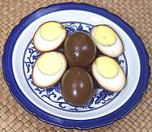
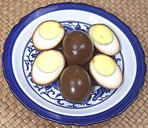

SAFARI
Users
- Buying & Storing Eggs
- Varieties of Egg
- Cooking Eggs
- Nutrition & Health
Buying & Storing Eggs
If you intend to use eggs for recipes the USDA would call "undercooked" (and most of the best recipes are), you should be particularly careful of the egg safety points listed here. See the Egg Safety section for additional details.
- Buy: eggs only from a source where you can be confident the storage temperature has been maintained below 45°F/7.2°C from farm to you. Eggs must be transported in refrigerated trucks.
- Buy eggs from a source with good turnover so they will be as fresh as possible.
- Storage: Raw eggs will keep in the refrigerator for 4 to 5 weeks but will lose moisture increasing the size of the air pocket. Old eggs will float high when boiled.
- USDA Graded eggs must have a date indicating when they were washed and packed. This is a three digit date starting at 001 on 1 Jan and incrementing to 31 Dec. "Sell by" dates are not required but if there is one it must be no more than 45 days from the "packed" date.
- USDA Inspection is for size and condition. It has no bearing on the safety of the eggs, and a "B" egg is just as safe as an "AA" egg. It all depends on the producer's facilities and handling.
- Refrigerate eggs immediately at 40°F/4.4°C or lower in the coolest part of the refrigerator (never the door). They should never be unrefrigerated for more than 2 hours.
- European Eggs: In Europe eggs are sold unwashed and are stored at room temperature protected by the waxy coating the chicken applies. American eggs are washed, sanitized and coated with mineral oil to replace the waxy coating. After washing they must be refrigerated until used. Because of the 1 in 10,000 possibility of an egg containing some salmonella bacteria, refrigeration of unwashed eggs is highly recommended.
- Fertile Eggs have no detectable nutritional benefit over standard sterile eggs but they are sold at higher prices as "health food".
- Organic Eggs that are carefully produced and handled just plain have to be better for you than industrial eggs. Unfortunately it is difficult to verify safe handling, especially from smaller producers.
- Brown or White? There is no detectable difference. Yolk color varies depending on the hen's diet.
- Blood Specs on the yolk are not a problem and indicate freshness - they fade with time.
- Hazy Whites are not a problem and indicate freshness. Whites become clearer with age as carbon dioxide is lost through the shell.
- Storage: Hard boiled eggs can be kept refrigerated for no more than 7 days. Separated egg whites and yolks for 4 days.
- Araucuna chickens from South America lay light green or light blue eggs. Anything the least bit different (and more expensive) gets promoted as "health food" these days, but claims these eggs are lower in cholesterol have not been confirmed.
Varieties of Egg
Chicken Eggs
[Gallus gallus]
American chickens lay about 66 billion eggs per year in commercial production (yes, that's a "b"). In North America the word "egg" without a qualifier means a chicken egg, and if a size is not given presume "Large". Baking recipes in particular should be specific about size.
Cooking:
For poached eggs, omelets and fried eggs, you want the freshest eggs you can lay your hands on, and grade AA is best. For other cooking methods it doesn't much matter. You may hear that eggs held in the fridge for a week or so peel easier when hard boiled, but my experience, and actual testing by others, have disproven that. For details of the tricky business of boiling and peeling chicken eggs, see our Boiling Eggs page. For omelets, see our French Savory Omelets recipe. For poaching eggs see our Poached Eggs recipe.Please understand that the USDA grading is for size and internal and external condition. It has nothing to do with nutrition (all grades are the same there). It also has little to do with salmonella infection or other safety issues and nothing whatever to do with the safety, sanitation or condition of the egg production facility. Eggs sold by small producers may be marked "unsized, ungraded" because of the expense of USDA compliance, which is strictly voluntary. With storage, eggs will loose weight and also drop from AA to A and then B and even lower.
Grades & Sizes:
| AA: | Thick firm whites and a round yolk, clean, no cracks or stains. Note: Jumbo eggs are never AA for technical reasons, but Extra Large can be. | |
| A: | Reasonably firm whites, otherwise same as AA. Jumbo eggs should be grade A. | |
| B: | Thinner whites and wider yolks, no cracks but may have slight staining. These are sold mostly to food processors. |
Size is not by the individual egg, but by the weight of a dozen eggs in a carton (weight of carton removed). Most commercial packaged eggs are rather uniform in size, except Jumbo, which has no upper limit. I have bought cartons of Jumbo eggs which were mostly unusually large double yolk eggs.
| Size | oz/doz | oz/each | Size | oz/doz | oz/each | |
|---|---|---|---|---|---|---|
| Jumbo | 30 | 2.50 | Medium | 21 | 1.75 | |
| Extra Large | 27 | 2.25 | Small | 18 | 1.50 | |
| Large | 24 | 2.00 | Peewee | 15 | 1.25 |
Other designations
- Natural: This designation is almost totally meaningless. All eggs are "natural", they come out of the rear end of a chicken. The USDA requires the label to explain what you mean by "natural".
- Free Range / Cage Free: Eggs from chickens not confined to battery cages, but free to roam around inside a warehouse. They may have access to an outside area of undefined size, but may never go outside. Commercial chickens are bred to like a crowded environment and may be uncomfortable going outside.
- Certified Organic: These are eggs from "Free Range" chickens that have been fed an entirely "certified organic" vegetable diet with no meat byproducts. They must be free of antibiotics and pesticides. There is USDA enforcement for this designation.
- Certified Humane: A further expansion of "Free Range", requiring lower stocking densities and forced molting is forbidden. This designation is verified by third party auditors, not the USDA.
- Omega-3-Enhanced: These are eggs from chickens fed a diet high in Omega-3 fatty acids. They are produced to satisfy the "health conscious" who seek benefits from Omega-3 (at a higher price, of course). Despite all the hoop-la, the benefits of Omega-3 are still rather uncertain, and at certain levels may be dangerous. AB tests have shown they taste just like regular eggs.
Duck Eggs
Responding to demand from a rapidly expanding Asian population, duck eggs are becoming quite common in North America. Naturally California is a leading producer because hundreds of Asian markets are close at hand. California duck eggs are considerably larger than those we see imported from Asia, running around 3-5/8 ounces, 2 inches diameter and 2.9 inches long vs. about 2-5/8 ounces. The jumbo chicken egg on the right weighs 2-1/2 ounces.
Caution
: When buying Duck Eggs, be careful, Fresh, Raw Salted, and Boiled Salted may look exactly the same - California salted duck eggs are not dyed red, as in the Philippines. Check the sign and the label so you get the kind you want. Also, Balut look exactly the same, and you probably don't want those.Duck eggs hard boil just fine using the same instructions as for
chicken eggs (see links above), but the shells are much stronger. The
yolks are a bit richer but they are otherwise interchangeable with
chicken eggs, weight for weight.
Quail Eggs
 High demand for quail eggs began in North America with the spread of
Japanese sushi bars (uni with a raw quail egg broken over it made as
gunkan nigiri sushi is one of my favorites), but they are also
appreciated by other Asian communities. The photo specimens averaged
0.47 ounce, 1.47 inches long and 1.1 inches diameter.
High demand for quail eggs began in North America with the spread of
Japanese sushi bars (uni with a raw quail egg broken over it made as
gunkan nigiri sushi is one of my favorites), but they are also
appreciated by other Asian communities. The photo specimens averaged
0.47 ounce, 1.47 inches long and 1.1 inches diameter.
The specked quail eggs found in markets here are generally from a
Japanese quail variety now widely raised for egg production. The photo
specimens came from Ontario, California. Some quail native to North
America and Europe lay white eggs but those quail are raised mainly
for eating, not egg production.
Details and Cooking.
Goose Eggs
While many geese are raised in North America, you're not likely to find goose eggs in your local markets unless you live next door to a goose farm. They are considerably larger than duck eggs, pointier than most eggs and may be white or colored. Photo © i0038.
Ostrich & Emu Eggs
- [Struthio camelus / Dromaius novaehollandiae]
The ostrich is native to Africa but is now farmed worldwide. Ostrich eggs are very large, around 6 inches long, weigh around 3 pounds and the shells are exceedingly hard and thick to prevent animals from breaking into them. While ostriches are farmed in North America, their eggs are not commonly available here. Photo © i0037.
Emus, native to Australia, lay a slightly smaller egg generally colored a greenish black with a shell a little softer and easier to carve than the ostrich egg. Emus aren't farmed as much in North America as the ostrich, though they are friendly and playful. As with ostrich eggs, emu eggs are sold in North America mainly for engraving and crafts rather than for eating.
Rheas (native to South America) and Cassowaries (Australia and New
Guinea) are other large birds related to the ostrich but rheas are too
dangerous and unfriendly to be popular and cassowaries are listed as
endangered.
Turtle Eggs
Sea turtles lay their eggs on land, buried in sand and left to be incubated by the sun. These leathery shelled eggs have been eaten since prehistoric times but are no longer on the menu due to the endangered status of sea turtles. Serious fines and possible imprisonment apply to posession, transportation or consumption of sea turtle eggs. The eggs in the photo were gathered in Brazil as part of a conservation effort. Photo © b0004.
Preserved Eggs
- [Century Eggs 1000 Year Eggs; Hot vit bac thao (Viet)]Preserved eggs are most commonly duck eggs but chicken eggs and quail eggs can also be used, The duck eggs used are about the size of U.S. chicken eggs at around 2-1/4 ounces each.
Eggs were traditionally preserved by coating with an alkaline slurry and allowing them to age for three months to a year. Various mixes of alkaline clay, ashes, quicklime and other materials have been used. Today commercial eggs are made using lye or sodium carbonate mixed with tea, salt and other materials.
The process converts the whites into a stiff gel, transparent and dark
amber in color. The yolks are turned blue-green, jelly like on the outside
and gooey at the center with a distinct sulphur / ammonia aroma. The
shells remain nearly white with a light blue-gray tint.
Details and Cooking
Tea Eggs & Soy Eggs
 
These are popular appetizer eggs made in the home or sold by street
vendors in China. Both are considerably more interesting visually than
regular hard boiled eggs - and more flavorful. You can easily make them
yourself from regular North American chicken eggs (and yours will be lead
free). Recipe for
Tea Eggs. Recipe for
Soy Eggs.

These are popular appetizer eggs made in the home or sold by street
vendors in China. Both are considerably more interesting visually than
regular hard boiled eggs - and more flavorful. You can easily make them
yourself from regular North American chicken eggs (and yours will be lead
free). Recipe for
Tea Eggs. Recipe for
Soy Eggs.
Salted Eggs
- [not vit muoi (Viet); itlog na maalat (Filipino)]These can be either duck eggs or chicken eggs, with duck eggs preferred (less breakage, richer flavor). They are made by a similar method as Preserved Eggs, but coated with salt mixed with clay or charcoal rather than alkali. They may also be made by soaking in a saturated salt brine.
Salted eggs are popular in China, the Philippines, Vietnam and
Thailand, so can be found in markets serving those ethnic communities.
You can make them yourself fairly easily using the saturated brine
method. California producers just put them up in mesh bags looking
exactly like their fresh eggs - read the label. This important
and complex subject now has its own page,
Salted Eggs.
Balut - Feathered Eggs
- [Crunchy Eggs; Balut (Filipino); Hot vit long (Viet); Pong tea khon (Cambodia); Maodan (China)]These are fertile duck eggs incubated for 16 days to develop the embryo. This method of eating eggs originated in China (where else) but is now particularly popular in the Philippines, Vietnam and Cambodia. California, never slow to recognize a market, produces these egg commercially for our rapidly expanding Southeast Asian communities (E2).
I will spare you the detail pictures, but if you really want to see them you can find some at Wikipedia Balut_(Egg). In Asia these are rarely sold uncooked, but in North America they are often sold raw. Use the instructions for Boiling Eggs for hard boiling these eggs.
These eggs are most often served as "appetizers" though they have
recently appeared in other dishes in the Philippines. Serve with a little
salt or a chili / vinegar dip - and plenty of beer. Many of us will need
to start with the plenty of beer before getting to the eggs.
Nutrition & Health
Nutrition:
Eggs are a high protein food, and their protein mix is so good it is the standard by which other protein sources are judged. They did get a bad reputation from vilification by the American Heart Association claiming their high cholesterol would clog your arteries. That campaign was based on incomplete studies and faulty science and has been largely discredited. For a nutritional breakdown see Note-E7.Cholesterol:
Some years ago the American Heart Association vilified eggs as being high in artery clogging cholesterol and strongly recommended against eating them (they allowed maybe two a week if you wanted to live dangerously). This caused a decline in egg consumption in North America.They have had to back off on the shrillness but still recommend against eggs (these people won't even admit they were wrong promoting trans fats). The truth is, nearly all cholesterol is manufactured within the body (it's essential for brain function, etc.) and most people absorb very little from dietary sources.
It has also been shown that for increases in total cholesterol from dietary sources HDL and LDL increase simultaneously, so the net impact on heart disease is statistically negligible.
Egg Safety:
The USDA (United States Department of Agriculture) warns that all eggs should be cooked to 160°F/71°C. Unfortunately this temperature is utterly ruinous for a great many famous egg recipes, including hollandaise, mayonnaise, poached eggs, coddled eggs, omelets, eggs "sunny side up", and even properly scrambled eggs.
Many of us simply can't accept ruined eggs - so what is the actual risk?
The US Department of Agriculture found, in 2002, that about 1 egg in 30,000 (some think 1 in 20,000) U.S. hens have produced may have been infected with Salmonella bacteria. This doesn't mean it'll make you sick, even if you gulp the egg down raw, but it does mean proper temperature control must be maintained from hen to stove. This bacteria multiplies rapidly at temperatures above 40°F/4.4°C.
Efforts are being made to completely eliminate salmonella from American egg production, but this has proved to be regional. Egg producers in "over regulated" California (where many "undercooked" egg dishes are extremely popular), have almost totally eliminated salmonella through use of sealed, sanitary facilities, testing and general diligence.
That is clearly not the case in "business friendly" Iowa, where in August, 2010, filthy, maggot and vermin infested conditions at two major high volume egg facilities forced recall and destruction of 550 million eggs. More than 1300 cases of salmonella were reported from Iowa eggs (but no deaths). This reflects very badly on Federal food and facility inspection programs in some states.
There have been no studies as to whether small farms and organic growers produce a safer or less safe egg in regard to salmonella than the industrial producers, but at least in Iowa you don't need a study to tell you.
Infections from home cooked eggs have been almost nonexistent - infections have almost always been from institutional sources (restaurants, health care and elderly care establishments). These establishments use "egg pooling" where a number of eggs are mixed together and ladled out of the pool for use. Pooling eggs tremendously magnifies the risk of infection from outside sources, the possibility of unsafe temperatures, and errors in handling.
For institutional use, pasteurized egg products are recommended by the USDA and CDC. These products are held at 140 °F for a specific time, a temperature that eliminates salmonella, but does not cause egg whites or yolks to coagulate.
For healthy adults the Safe Handling rules at the top of this page should be sufficient to prevent illness, but those who feel they must be extra cautious can purchase "pasteurized in the shell" eggs in some regions of the country (I haven't seen them here in California). These do cost about twice what regular eggs cost.
Despite all measures in place and being implemented, it is recommended that "undercooked" eggs not be served to infants, very small children, pregnant women, frail elderly people or those who have a compromised immune system. In particular small children can be sickened by an amount of Salmonella that would cause no problem at all in a healthy adult.
Links
- E1 - Egg Safety - Organic Authority Just How risky are Runny Eggs?
- E2 - Duck eggs, fresh, salted, crunchy - Metzer Farms
- E4 - Egg Safety - U.S. Department of Agriculture Shell Eggs from Farm to Table
- E7 - Cholesterol - Understanding Cholesterol Dr. Ben Kim.
- E8 - British Egg Safety - The Telegraph. Runny Eggs Are Safe, Experts Say.